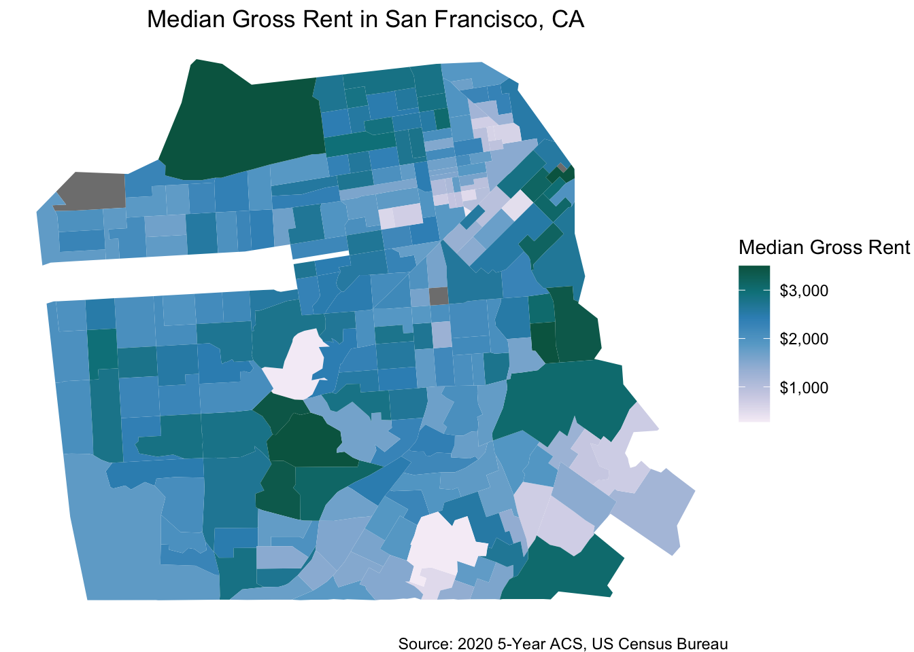
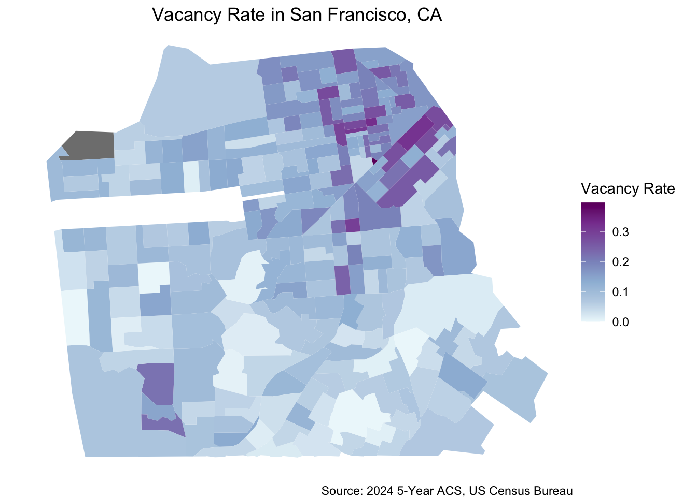

Code
library(tidycensus)
library(sf)
library(tidyverse)
library(spdep)
library(tmap)
library(mapview)
library(leaflet)The goal of this project is to understand the rental market in San Francisco, California. This project uses the 2020 5-Year American Community Survey (ACS) and the 2024 5-Year ACS. This project uses tidycensus, tidyverse, tmap, and other R libraries to analyze the ACS data.
The first step of this analysis is to install the necessary libraries to acquire the San Francisco data.
# SF data
sf_data <- get_acs(
geography = "tract",
variables = sf_var,
state = "CA",
county = "San Francisco",
output = "wide",
geometry = TRUE,
year = 2020
) %>%
st_transform(7131)|> # filtering out islands
filter(!GEOID %in% c(
"06075980401", # Farallon Islands
"06075017902", # Treasure Island / Yerba Buena
"06075017901", # Treasure Island
"06075017903", # Treasure Island
"06075980300" # water tract
)) |>
filter(!st_is_empty(geometry)) |>
filter(st_is_valid(geometry))This figure shows the median gross rent in San Francisco. Overall, rent in San Francisco is high, but this figure indicates the range across the central city.
# mapping median rent estimate
med_rent_map <- ggplot(sf_data, aes(fill = med_gross_rentE)) +
geom_sf(color = NA) +
scale_fill_distiller(palette = "PuBuGn",
direction = 1,
labels = scales::label_dollar()) +
theme_void() +
labs(title = "Median Gross Rent in San Francisco, CA",
fill = "Median Gross Rent",
caption = "Source: 2020 5-Year ACS, US Census Bureau") +
theme(text = element_text(family = ""),
plot.title = element_text(hjust = 0.5))
med_rent_map
Using the Local Gi*, we are able to understand the clusters of high and low rent in the region.
# mapping clusters of high low and high rent in San Francisco
# weights matrix
sf_data <- sf_data |> filter(!is.na(med_gross_rentE))
neighbors <- poly2nb(sf_data, queen = TRUE)
summary(neighbors)
sf_data[card(neighbors) == 0, ] |> select(GEOID, NAME)
weights <- nb2listw(neighbors, style = "W", zero.policy = TRUE)
weights$weights[[1]]
neighbors[[1]]
sf_data$lag_estimate <- lag.listw(weights, sf_data$med_gross_rentE)
# For Gi*, re-compute the weights with `include.self()`
localg_weights <- nb2listw(include.self(neighbors))
sf_data$localG <- as.numeric(localG(sf_data$med_gross_rentE, localg_weights))This map highlights statistically significant clusters of high and low rent. The red, or high values, indicate tracts with high median gross rent surrounded by other tracts with high median gross rent. Low values are shown in blue, which indicate tracts with low median gross rent surrounded by other low median gross rent tracts.
# Map of Local Gi scores w/spatial clusters highlighted
sf_data <- sf_data %>%
mutate(hotspot = case_when(
localG >= 2.56 ~ "High cluster",
localG <= -2.56 ~ "Low cluster",
TRUE ~ "Not significant"
))
tmap_mode("view")
tm_shape(sf_data) +
tm_polygons(
fill = "hotspot",
fill.scale = tm_scale_categorical(
values = c("High cluster" = "red", "Low cluster" = "blue", "Not significant" = NA)
),
fill.legend = tm_legend(title = "Rental Clusters"),
col = NA,
col_alpha = 0.5
) +
tm_basemap("CartoDB.Positron") +
tm_title("Areas with High & Low Rent Clusters in San Francisco, CA")Now that we have run visualizations and statistical tests to understand rent in San Francisco, I wanted to compare this with the vacancy rate of each census tract. This is done by acquiring the vacant housing and total housing units from the 2024 5-Year ACS.
vacancy_vars <- c(vacant = "B25004_001",
total = "B25002_001")
recent_vacancy <- get_acs(
geography = "tract",
variables = vacancy_vars,
state = "CA",
county = "San Francisco",
geometry = TRUE,
output = "wide",
year = 2024
) %>%
st_transform(7131)|> # filtering out islands
filter(!GEOID %in% c(
"06075980401", # Farallon Islands
"06075017902", # Treasure Island / Yerba Buena
"06075017901", # Treasure Island
"06075017903", # Treasure Island
"06075980300" # water tract
)) |>
filter(!st_is_empty(geometry)) |>
filter(st_is_valid(geometry))
sf_vacancy_rate <- recent_vacancy %>%
mutate(vacancy_rate = vacantE/totalE)This figure shows the vacancy rate across San Francisco.
# mapping vacancy rate
vacancy_map <- ggplot(sf_vacancy_rate, aes(fill = vacancy_rate)) +
geom_sf(color = NA) +
scale_fill_distiller(palette = "BuPu",
direction = 1) +
theme_void() +
labs(title = "Vacancy Rate in San Francisco, CA",
fill = "Vacancy Rate",
caption = "Source: 2024 5-Year ACS, US Census Bureau") +
theme(text = element_text(family = ""),
plot.title = element_text(hjust = 0.5))
vacancy_map
The final figure of this project is an interactive map with the vacancy rate, rental clusters, and rental cost. While this is not the full picture of the rental market in San Francisco, it shows cost, availability, and statistically significant regions of high and low rent across the city. The interactive map allows users to have vacancy rate or median gross rent shown, as well as the clusters of high and low median gross rent across the city.
tmap_mode("view")
# mapping vacancy rate
tmap_mode("view")
# mapping vacancy rate
combined_map <- tm_shape(sf_data) +
tm_polygons(
fill = "med_gross_rentE",
fill.scale = tm_scale_continuous(
values = "PuBuGn",
label.format = list(prefix = "$", big.mark = ",")
),
group = "Median Gross Rent",
fill.legend = tm_legend(title = "Median Gross Rent",
reverse = TRUE),
col = "grey") +
tm_shape(sf_vacancy_rate |> filter(!is.na(vacancy_rate))) +
tm_polygons(
fill = "vacancy_rate",
fill.scale = tm_scale_continuous(
values = "brewer.BuPu"
),
group = "Vacancy Rate",
fill.legend = tm_legend(title = "Vacancy Rate", reverse = TRUE),
col = "grey"
) +
tm_shape(sf_data |> filter(hotspot != "Not significant")) +
tm_borders(
col = "hotspot",
col.scale = tm_scale_categorical(
values = c("High cluster" = "red", "Low cluster" = "blue")
),
group = "Rental Clusters",
col.legend = tm_legend(title = "Rental Clusters"),
lwd = 2
) +
tm_basemap("CartoDB.Positron") +
tm_title("Vacant Housing Units in San Francisco, CA")
combined_map